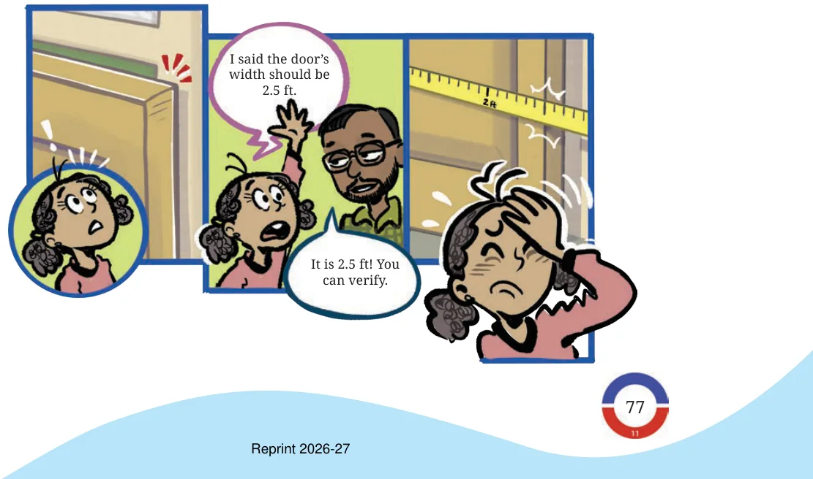
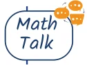

Sarayu gets a message: "The bus will reach the station 4.5 hours post noon." When will the bus reach the station: 4:05 p.m., 4:50 p.m., 4:25 p.m.? None of these! Here, 0.5 hours means splitting an hour into 10 equal parts and taking 5 parts out of it. Each part will be 6 minutes (60 minutes/10) long. 5 such parts make 30 minutes. So, the bus will reach the station at 4:30. Here is a short-story of a decimal mishap: A girl measures the width of an opening as 2 ft 5 inches but conveys to the carpenter to make a door 2.5 ft wide. The carpenter makes a door of width 2 ft 6 inches (since 1 ft \(= 12\) inches, 0.5 ft \(= 6\) inches), and it wouldn’t close fully.

If you watch cricket, you might have noticed decimal-looking numbers like ‘Overs left: 5.5’. Does this mean 5 overs and 5 balls or 5 i.e., 5 overs and 5 balls.overs and 3 balls? Here, 5.5 overs means \(5 \frac{5}{6}\) overs (as 1 over \(= 6\) balls), Where else can we see such ‘non-decimals’ with a decimal-like notation?
